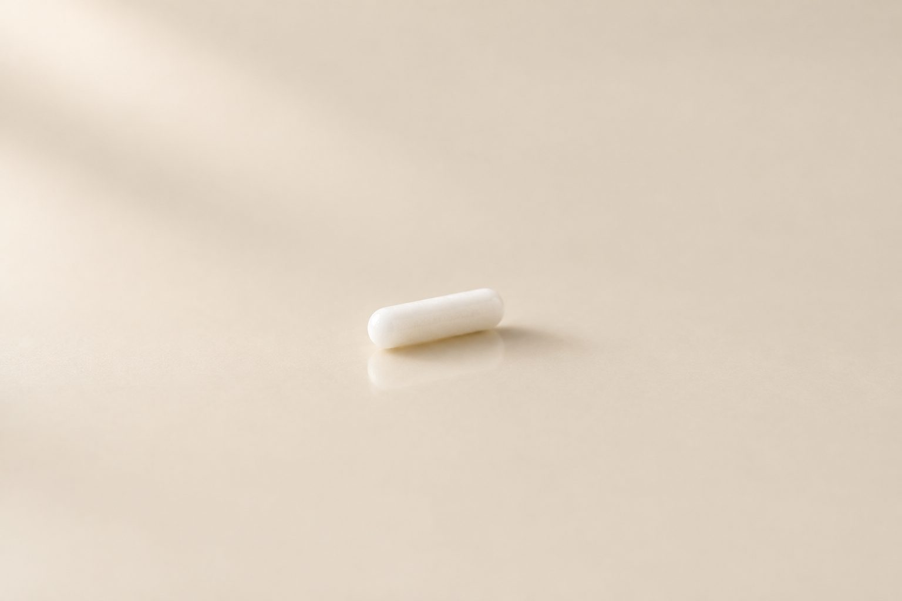

Reduce el deseo de consumo, recupera el control de tu vida.

de liberación continua, aproximadamente, según el producto y cada persona.
bajo la piel, mediante un procedimiento médico menor.
diarias: el medicamento se libera de forma progresiva.
no es sedante ni narcótico y no produce dependencia física.
Disminuye en un 80 % el deseo de consumir y las recaídas.
Mejora la adherencia al tratamiento y reduce las recaídas.
El cerebro tiene un sistema natural de recompensa en el que participan los receptores opioides, relacionados con el placer y la motivación.
La naltrexona ocupa esos receptores sin activarlos, como una llave que ocupa la cerradura pero no enciende el mecanismo. Así puede reducir parte del refuerzo asociado a ciertas sustancias y conductas.
Puede disminuir el deseo intenso de beber, los episodios de consumo excesivo y el riesgo de recaída. No provoca una reacción desagradable al beber.
Fentanilo, heroína, morfina, oxicodona. Bloquea la euforia y ayuda a mantener la abstinencia, siempre después de la desintoxicación.
Cuando la psicoterapia no ha dado resultados suficientes o hay recaídas repetidas.
Puede disminuir el deseo de consumo. Si también hay consumo de alcohol, puede considerarse para tratar el problema con el alcohol.
Al bloquear los receptores opioides, puede reducir la recompensa y el refuerzo asociados al consumo, así como el deseo de consumir.
Como parte de un abordaje terapéutico integral.
TLP e impulsividad
El TLP puede acompañarse de dificultades para regular emociones intensas, impulsividad, conductas autolesivas y comportamientos de riesgo.
Se ha planteado la hipótesis de que el sistema opioide endógeno podría participar en determinados mecanismos de regulación emocional y autolesiones.
La naltrexona podría ayudar a reducir la impulsividad y la frecuencia de autolesiones en algunos pacientes con TLP, como parte de un abordaje integral.
La psicoterapia, en particular la terapia dialéctico-conductual (DBT), sigue siendo la intervención fundamental.
Medicamentos actuales, función hepática (y renal cuando corresponda), y características, duración y regulación sanitaria del implante.
Habitualmente 7 a 10 días sin opioides de acción corta y 10 a 14 o más en los de acción prolongada. En fentanilo se individualiza.
Procedimiento médico menor bajo la piel.
Control médico, psicoterapia, prevención de recaídas y acompañamiento familiar.
Pueden presentarse náuseas, dolor de cabeza, mareo, cansancio, alteraciones del sueño o malestar abdominal. En la zona del implante: dolor, inflamación, infección, rechazo o expulsión.
La naltrexona oral debe tomarse todos los días; el implante libera el medicamento de forma progresiva, evita olvidos y da continuidad al tratamiento.
Actúa sobre mecanismos cerebrales concretos, pero no elimina hábitos, detonantes emocionales ni patrones aprendidos. Su mejor resultado se obtiene junto con psicoterapia, seguimiento médico y la participación de la familia.
Mantener una comunicación respetuosa, evitar la estigmatización, reconocer los avances y poner límites saludables. Una recaída requiere reevaluación clínica, no solamente medidas disciplinarias.
Cada caso es distinto. En la valoración se determina si el implante es adecuado y cómo integrarlo a un plan de tratamiento.